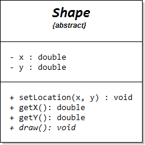

Creating an Abstract Class
Unlike Java and Python, C++ has no abstract keyword. Instead, in C++, an Abstract Base Class (or ABC) is any class that has one, or more, pure virtual member functions, created using the following syntax in the prototype:
class Shape // abstract class
{
public:
...
// Pure virtual function (abstract method)
virtual void draw() const = 0;
...
};
Think of the = 0; part of syntax as a replacement for the abstract keyword in Java and Python.
Abstract classes are not restricted to abstract member functions like draw(); you can have as many regular (concrete) member functions as you'd like, freely mixed with your abstract methods.
The Shape class in the UML diagram at the right has a setLocation() member function. In UML, abstract methods, such as draw(), are drawn using italics.
Your concrete methods may call abstract methods as part of their definition, even though the member function is never implemented in the base class. Unlike Java, C++ pure virtual functions may have an optional implementation. Since you cannot create an instance of an abstract base class, you could only call this implementation from a derived class.
 This course content is offered under a
CC
Attribution Non-Commercial license. Content in this course
can be considered under this license unless otherwise noted.
This course content is offered under a
CC
Attribution Non-Commercial license. Content in this course
can be considered under this license unless otherwise noted.